12 Flow effects on survival (phi) models - O’Bear only
The goal of this modelling exercise is to evaluate the effect of new tributary-specific stream flow estimates on survival of brook trout and brown trout. We will compare survival across the WB and tributaries with flow input data as 1) single flow estimate for all locations (historical approach) and 2) hindcasted flows for each tributary based on new tributary-specific flows which are available since 2000.
The goal is to find the best structure for the survival model, then compare survival estimates with tributary-specific flow to estimates with common flow across locations.
Structure options include [species, cohort, season, isYOY, flow, flow^2]
12.0.1 Model phiT_pT flow (tt_OB_flow)
Cohort-dependent estimates of phi and p with flow and temperature hierarchical effects
12.0.1.1 Retrieve model results
Model is run using targets in R/modelCMR_tt_OB.R
Code
# Following https://oliviergimenez.github.io/bayesian-cr-workshop/worksheets/4_demo.html
#
out_flow <- tar_read(tt_modelOut_ft_cohort_OB_flow )
MCMCplot(object = out_flow$mcmc)
Code
summary_flow <- MCMCsummary(object = out_flow$mcmc, round = 3) %>%
mutate(flowData = "flow") %>%
rownames_to_column(var = "var")
summary_flow %>% filter(grepl("betaIntYOYSeason", var)) var mean sd 2.5% 50% 97.5% Rhat n.eff
1 betaIntYOYSeason[1, 1] 0.820 0.392 0.066 0.810 1.613 1.00 963
2 betaIntYOYSeason[2, 1] -0.363 0.444 -1.212 -0.380 0.537 1.00 835
3 betaIntYOYSeason[1, 2] 1.433 1.164 -0.851 1.420 3.709 1.00 3474
4 betaIntYOYSeason[2, 2] -0.036 0.315 -0.666 -0.031 0.575 1.00 2318
5 betaIntYOYSeason[1, 3] 1.783 0.422 1.018 1.758 2.656 1.00 517
6 betaIntYOYSeason[2, 3] 1.031 0.343 0.383 1.026 1.708 1.00 1043
7 betaIntYOYSeason[1, 4] 2.408 0.504 1.515 2.367 3.496 1.01 462
8 betaIntYOYSeason[2, 4] 1.508 0.449 0.671 1.487 2.471 1.00 504
9 betaIntYOYSeasonOut[1, 1] 0.688 0.081 0.517 0.692 0.834 1.00 1004
10 betaIntYOYSeasonOut[2, 1] 0.414 0.104 0.229 0.406 0.631 1.00 841
11 betaIntYOYSeasonOut[1, 2] 0.758 0.183 0.299 0.805 0.976 1.00 3432
12 betaIntYOYSeasonOut[2, 2] 0.491 0.077 0.339 0.492 0.640 1.00 2319
13 betaIntYOYSeasonOut[1, 3] 0.849 0.052 0.735 0.853 0.934 1.00 604
14 betaIntYOYSeasonOut[2, 3] 0.732 0.066 0.595 0.736 0.847 1.00 1135
15 betaIntYOYSeasonOut[1, 4] 0.910 0.039 0.820 0.914 0.971 1.00 594
16 betaIntYOYSeasonOut[2, 4] 0.810 0.066 0.662 0.816 0.922 1.00 602
flowData
1 flow
2 flow
3 flow
4 flow
5 flow
6 flow
7 flow
8 flow
9 flow
10 flow
11 flow
12 flow
13 flow
14 flow
15 flow
16 flowCode
summary_flow %>% filter(grepl("betaPhiYOYSeason", var)) var mean sd 2.5% 50% 97.5% Rhat n.eff
1 betaPhiYOYSeason[1, 1] 0.027 1.739 -3.367 0.050 3.374 1 4337
2 betaPhiYOYSeason[2, 1] 0.005 1.735 -3.415 0.031 3.335 1 4383
3 betaPhiYOYSeason[1, 2] 0.003 1.761 -3.424 -0.032 3.509 1 4000
4 betaPhiYOYSeason[2, 2] 0.008 1.730 -3.379 0.026 3.410 1 4000
5 betaPhiYOYSeason[1, 3] -0.012 1.747 -3.556 -0.025 3.392 1 4252
6 betaPhiYOYSeason[2, 3] -0.026 1.719 -3.309 -0.037 3.364 1 4000
7 betaPhiYOYSeason[1, 4] -0.012 1.735 -3.429 -0.021 3.333 1 4056
8 betaPhiYOYSeason[2, 4] 0.012 1.730 -3.328 0.005 3.340 1 4480
9 betaPhiYOYSeasonOut[1, 1] 0.506 0.293 0.033 0.513 0.967 1 4350
10 betaPhiYOYSeasonOut[2, 1] 0.502 0.292 0.032 0.508 0.966 1 4136
11 betaPhiYOYSeasonOut[1, 2] 0.499 0.295 0.032 0.492 0.971 1 4000
12 betaPhiYOYSeasonOut[2, 2] 0.502 0.293 0.033 0.506 0.968 1 4000
13 betaPhiYOYSeasonOut[1, 3] 0.499 0.292 0.028 0.494 0.967 1 4246
14 betaPhiYOYSeasonOut[2, 3] 0.495 0.293 0.035 0.491 0.967 1 4000
15 betaPhiYOYSeasonOut[1, 4] 0.497 0.294 0.031 0.495 0.966 1 4292
16 betaPhiYOYSeasonOut[2, 4] 0.502 0.293 0.035 0.501 0.966 1 4433
flowData
1 flow
2 flow
3 flow
4 flow
5 flow
6 flow
7 flow
8 flow
9 flow
10 flow
11 flow
12 flow
13 flow
14 flow
15 flow
16 flowCode
summary_flow %>% filter(grepl("betaFlow", var)) var mean sd 2.5% 50% 97.5% Rhat n.eff flowData
1 betaFlow[1, 1, 1] 0.311 0.503 -0.635 0.296 1.339 1.08 440 flow
2 betaFlow[2, 1, 1] -1.305 0.384 -2.009 -1.315 -0.524 1.01 187 flow
3 betaFlow[3, 1, 1] -5.155 0.793 -6.682 -5.166 -3.567 1.00 308 flow
4 betaFlow[1, 2, 1] -1.036 0.297 -1.627 -1.039 -0.465 1.00 686 flow
5 betaFlow[2, 2, 1] -2.120 0.376 -2.875 -2.117 -1.386 1.00 493 flow
6 betaFlow[3, 2, 1] -2.821 0.491 -3.809 -2.815 -1.891 1.00 439 flow
7 betaFlow[1, 1, 2] 0.177 1.134 -1.982 0.172 2.357 1.00 3419 flow
8 betaFlow[2, 1, 2] -0.574 1.147 -2.799 -0.567 1.705 1.00 3179 flow
9 betaFlow[3, 1, 2] -2.007 1.167 -4.281 -1.978 0.265 1.00 2313 flow
10 betaFlow[1, 2, 2] -0.323 0.098 -0.516 -0.324 -0.128 1.00 806 flow
11 betaFlow[2, 2, 2] -0.853 0.143 -1.144 -0.852 -0.587 1.01 570 flow
12 betaFlow[3, 2, 2] -0.149 0.168 -0.489 -0.145 0.171 1.01 675 flow
13 betaFlow[1, 1, 3] 0.670 0.469 -0.149 0.638 1.643 1.00 202 flow
14 betaFlow[2, 1, 3] -0.313 0.410 -1.304 -0.275 0.363 1.00 454 flow
15 betaFlow[3, 1, 3] -0.933 0.513 -2.091 -0.859 -0.101 1.01 309 flow
16 betaFlow[1, 2, 3] 1.681 0.357 1.012 1.666 2.412 1.02 145 flow
17 betaFlow[2, 2, 3] -0.340 0.180 -0.681 -0.346 0.016 1.01 496 flow
18 betaFlow[3, 2, 3] -2.111 0.407 -2.951 -2.098 -1.326 1.01 152 flow
19 betaFlow[1, 1, 4] -0.263 0.453 -1.061 -0.305 0.775 1.00 269 flow
20 betaFlow[2, 1, 4] -0.197 0.546 -1.246 -0.216 0.896 1.00 227 flow
21 betaFlow[3, 1, 4] -0.768 0.412 -1.604 -0.760 0.006 1.00 285 flow
22 betaFlow[1, 2, 4] -0.368 0.306 -0.963 -0.369 0.228 1.00 521 flow
23 betaFlow[2, 2, 4] 0.372 0.439 -0.545 0.390 1.221 1.00 221 flow
24 betaFlow[3, 2, 4] -1.226 0.351 -1.916 -1.217 -0.541 1.00 221 flow
25 betaFlowTop[1] 0.070 0.631 -1.168 0.079 1.271 1.00 4000 flow
26 betaFlowTop[2] -0.413 0.633 -1.647 -0.416 0.865 1.00 3117 flow
27 betaFlowTop[3] -1.177 0.640 -2.412 -1.176 0.070 1.00 3365 flow
28 betaFlowYOY[1, 1] 0.194 0.574 -0.943 0.193 1.337 1.01 1522 flow
29 betaFlowYOY[2, 1] -0.564 0.564 -1.692 -0.566 0.564 1.00 1054 flow
30 betaFlowYOY[3, 1] -2.001 0.602 -3.158 -2.000 -0.842 1.00 954 flow
31 betaFlowYOY[1, 2] 0.005 0.486 -0.899 0.003 0.968 1.00 1999 flow
32 betaFlowYOY[2, 2] -0.668 0.485 -1.607 -0.669 0.294 1.00 2017 flow
33 betaFlowYOY[3, 2] -1.501 0.488 -2.452 -1.511 -0.552 1.00 2759 flowCode
summary_flow %>% filter(grepl("betaInt", var)) var mean sd 2.5% 50% 97.5% Rhat n.eff
1 betaInt[1, 1, 1] 1.265 0.520 0.344 1.220 2.364 1.03 504
2 betaInt[2, 1, 1] -0.641 0.527 -1.645 -0.649 0.424 1.00 476
3 betaInt[1, 2, 1] 1.454 1.557 -1.621 1.453 4.507 1.00 4000
4 betaInt[2, 2, 1] -0.531 0.332 -1.136 -0.552 0.160 1.00 566
5 betaInt[1, 3, 1] 1.866 0.953 -0.003 1.848 3.831 1.00 1910
6 betaInt[2, 3, 1] -1.408 0.659 -2.633 -1.445 -0.002 1.00 1108
7 betaInt[1, 4, 1] 2.649 0.947 1.020 2.578 4.697 1.01 1235
8 betaInt[2, 4, 1] 1.298 0.623 0.435 1.167 2.815 1.00 315
9 betaInt[1, 1, 2] -1.446 0.553 -2.509 -1.460 -0.316 1.04 390
10 betaInt[2, 1, 2] 0.224 0.420 -0.528 0.192 1.130 1.00 1288
11 betaInt[1, 2, 2] 1.455 1.538 -1.524 1.435 4.508 1.00 4338
12 betaInt[2, 2, 2] 0.080 0.415 -0.621 0.039 0.988 1.01 702
13 betaInt[1, 3, 2] 0.980 1.484 -1.737 1.015 3.697 1.00 534
14 betaInt[2, 3, 2] -0.104 0.403 -0.861 -0.120 0.737 1.00 590
15 betaInt[1, 4, 2] 3.575 0.842 2.008 3.543 5.305 1.00 746
16 betaInt[2, 4, 2] 2.512 0.525 1.500 2.506 3.575 1.00 529
17 betaInt[1, 1, 3] 1.105 0.545 0.175 1.062 2.308 1.00 1300
18 betaInt[2, 1, 3] -2.246 0.628 -3.457 -2.252 -0.973 1.00 584
19 betaInt[1, 2, 3] 1.443 1.500 -1.556 1.430 4.360 1.00 4000
20 betaInt[2, 2, 3] -0.006 0.240 -0.453 -0.015 0.478 1.00 1652
21 betaInt[1, 3, 3] 1.384 0.968 -0.363 1.350 3.449 1.01 1038
22 betaInt[2, 3, 3] 1.441 0.455 0.632 1.412 2.406 1.00 1517
23 betaInt[1, 4, 3] 2.499 0.629 1.339 2.470 3.805 1.00 524
24 betaInt[2, 4, 3] 3.510 0.754 2.071 3.490 5.025 1.00 578
25 betaInt[1, 1, 4] 1.270 0.935 -0.523 1.248 3.162 1.00 1330
26 betaInt[2, 1, 4] -1.383 1.338 -3.713 -1.493 1.362 1.00 791
27 betaInt[1, 2, 4] 1.405 1.521 -1.594 1.396 4.405 1.00 4000
28 betaInt[2, 2, 4] 0.310 0.588 -0.678 0.246 1.631 1.00 1727
29 betaInt[1, 3, 4] 2.177 0.775 0.729 2.161 3.818 1.00 1208
30 betaInt[2, 3, 4] -0.099 0.733 -1.185 -0.225 1.801 1.01 1185
31 betaInt[1, 4, 4] 2.761 0.760 1.352 2.737 4.337 1.01 606
32 betaInt[2, 4, 4] -0.058 1.220 -1.783 -0.342 2.922 1.00 581
33 betaInt[1, 1, 5] 0.775 1.117 -1.470 0.794 2.940 1.00 2820
34 betaInt[2, 1, 5] -0.484 1.143 -2.705 -0.488 1.736 1.01 2340
35 betaInt[1, 2, 5] 1.452 1.510 -1.523 1.475 4.365 1.00 3577
36 betaInt[2, 2, 5] -0.258 0.572 -1.225 -0.320 1.053 1.00 1160
37 betaInt[1, 3, 5] 1.774 0.651 0.745 1.688 3.317 1.00 2005
38 betaInt[2, 3, 5] 2.864 0.823 1.287 2.863 4.515 1.02 178
39 betaInt[1, 4, 5] 1.341 0.822 0.134 1.192 3.405 1.00 626
40 betaInt[2, 4, 5] -0.546 0.730 -1.834 -0.610 1.043 1.00 859
41 betaInt[1, 1, 6] 1.134 0.998 -0.815 1.128 3.151 1.00 2530
42 betaInt[2, 1, 6] -1.329 1.039 -3.162 -1.397 0.858 1.00 811
43 betaInt[1, 2, 6] 1.444 1.536 -1.610 1.461 4.420 1.00 4000
44 betaInt[2, 2, 6] 0.032 0.425 -0.690 -0.001 0.995 1.00 1286
45 betaInt[1, 3, 6] 2.954 0.832 1.445 2.908 4.669 1.01 323
46 betaInt[2, 3, 6] 0.937 0.584 -0.027 0.872 2.265 1.02 1333
47 betaInt[1, 4, 6] 1.819 1.109 -0.054 1.726 4.266 1.00 851
48 betaInt[2, 4, 6] 0.045 0.798 -1.189 -0.068 2.040 1.00 627
49 betaInt[1, 1, 7] -1.415 0.650 -2.545 -1.472 -0.029 1.00 256
50 betaInt[2, 1, 7] 0.569 0.647 -0.563 0.536 1.986 1.00 1772
51 betaInt[1, 2, 7] 1.432 1.532 -1.583 1.419 4.432 1.00 3520
52 betaInt[2, 2, 7] -1.061 0.514 -2.031 -1.072 -0.016 1.00 1258
53 betaInt[1, 3, 7] 1.924 0.679 0.806 1.854 3.383 1.00 1441
54 betaInt[2, 3, 7] 2.440 0.671 1.254 2.395 3.846 1.00 1839
55 betaInt[1, 4, 7] 2.313 1.047 0.473 2.219 4.468 1.00 1023
56 betaInt[2, 4, 7] 1.413 0.820 0.084 1.321 3.264 1.00 1502
57 betaInt[1, 1, 8] 0.504 0.248 0.063 0.490 1.052 1.01 1114
58 betaInt[2, 1, 8] -0.964 0.580 -1.993 -0.994 0.258 1.00 768
59 betaInt[1, 2, 8] 1.440 1.510 -1.453 1.436 4.425 1.00 3869
60 betaInt[2, 2, 8] -0.131 0.213 -0.541 -0.136 0.301 1.00 818
61 betaInt[1, 3, 8] 1.914 0.455 1.130 1.875 2.957 1.02 507
62 betaInt[2, 3, 8] 1.162 0.291 0.620 1.151 1.777 1.00 1136
63 betaInt[1, 4, 8] 2.952 0.857 1.563 2.847 4.846 1.00 531
64 betaInt[2, 4, 8] 1.999 0.808 0.697 1.913 3.724 1.00 775
65 betaInt[1, 1, 9] 0.779 1.079 -1.366 0.768 2.880 1.00 2396
66 betaInt[2, 1, 9] -0.302 0.822 -1.799 -0.352 1.397 1.00 2047
67 betaInt[1, 2, 9] 1.461 1.544 -1.662 1.443 4.447 1.00 4000
68 betaInt[2, 2, 9] 0.195 0.504 -0.695 0.155 1.286 1.01 1775
69 betaInt[1, 3, 9] 0.870 0.880 -0.697 0.801 2.810 1.00 1397
70 betaInt[2, 3, 9] 0.942 0.554 -0.081 0.925 2.067 1.00 1489
71 betaInt[1, 4, 9] 2.267 1.106 0.309 2.203 4.608 1.00 1075
72 betaInt[2, 4, 9] 1.172 1.017 -0.608 1.099 3.320 1.00 1277
73 betaInt[1, 1, 10] 3.305 0.792 1.839 3.294 4.968 1.03 706
74 betaInt[2, 1, 10] -0.479 1.051 -2.417 -0.528 1.729 1.00 2158
75 betaInt[1, 2, 10] 1.434 1.498 -1.558 1.431 4.339 1.00 4000
76 betaInt[2, 2, 10] -0.043 0.453 -0.864 -0.068 0.942 1.00 2178
77 betaInt[1, 3, 10] 2.581 0.844 0.968 2.573 4.252 1.00 1154
78 betaInt[2, 3, 10] 2.409 0.680 1.142 2.388 3.778 1.00 689
79 betaInt[1, 4, 10] 2.645 0.946 0.869 2.608 4.585 1.00 1047
80 betaInt[2, 4, 10] 1.881 0.850 0.339 1.826 3.726 1.00 1297
81 betaInt[1, 1, 11] 0.100 0.590 -0.937 0.070 1.312 1.00 241
82 betaInt[2, 1, 11] 1.449 0.539 0.452 1.421 2.574 1.00 1313
83 betaInt[1, 2, 11] 1.413 1.517 -1.582 1.425 4.379 1.00 3892
84 betaInt[2, 2, 11] 0.161 0.225 -0.254 0.155 0.631 1.00 1134
85 betaInt[1, 3, 11] 2.067 0.474 1.203 2.038 3.069 1.00 264
86 betaInt[2, 3, 11] 0.489 0.333 -0.148 0.488 1.159 1.01 403
87 betaInt[1, 4, 11] 2.776 0.832 1.331 2.709 4.592 1.00 499
88 betaInt[2, 4, 11] 3.545 0.957 1.617 3.542 5.354 1.01 382
89 betaInt[1, 1, 12] 0.762 0.750 -0.597 0.711 2.413 1.02 791
90 betaInt[2, 1, 12] 0.317 0.822 -1.220 0.280 2.048 1.00 1659
91 betaInt[1, 2, 12] 1.420 1.539 -1.599 1.413 4.451 1.00 4000
92 betaInt[2, 2, 12] 0.228 0.457 -0.541 0.192 1.257 1.00 2116
93 betaInt[1, 3, 12] 1.719 0.696 0.427 1.691 3.191 1.00 441
94 betaInt[2, 3, 12] 1.747 0.593 0.701 1.706 3.018 1.00 968
95 betaInt[1, 4, 12] 3.030 1.012 1.094 3.006 5.081 1.00 605
96 betaInt[2, 4, 12] 2.267 0.828 0.728 2.250 4.027 1.00 1122
97 betaInt[1, 1, 13] 1.985 0.747 0.638 1.935 3.576 1.00 1037
98 betaInt[2, 1, 13] -0.371 1.099 -2.514 -0.368 1.775 1.00 3259
99 betaInt[1, 2, 13] 1.416 1.535 -1.554 1.423 4.413 1.00 4000
100 betaInt[2, 2, 13] -0.035 1.043 -2.038 -0.048 2.118 1.00 2951
101 betaInt[1, 3, 13] 1.329 0.433 0.547 1.309 2.238 1.01 340
102 betaInt[2, 3, 13] 1.027 1.069 -1.032 1.025 3.174 1.00 3465
103 betaInt[1, 4, 13] 1.644 0.772 0.295 1.585 3.266 1.02 470
104 betaInt[2, 4, 13] 1.521 1.097 -0.645 1.545 3.616 1.00 2056
105 betaIntTop 0.646 0.640 -0.638 0.660 1.886 1.01 4000
106 betaIntYOY[1] 1.416 0.576 0.284 1.410 2.551 1.00 3119
107 betaIntYOY[2] 0.551 0.487 -0.395 0.551 1.505 1.00 3635
108 betaIntYOYSeason[1, 1] 0.820 0.392 0.066 0.810 1.613 1.00 963
109 betaIntYOYSeason[2, 1] -0.363 0.444 -1.212 -0.380 0.537 1.00 835
110 betaIntYOYSeason[1, 2] 1.433 1.164 -0.851 1.420 3.709 1.00 3474
111 betaIntYOYSeason[2, 2] -0.036 0.315 -0.666 -0.031 0.575 1.00 2318
112 betaIntYOYSeason[1, 3] 1.783 0.422 1.018 1.758 2.656 1.00 517
113 betaIntYOYSeason[2, 3] 1.031 0.343 0.383 1.026 1.708 1.00 1043
114 betaIntYOYSeason[1, 4] 2.408 0.504 1.515 2.367 3.496 1.01 462
115 betaIntYOYSeason[2, 4] 1.508 0.449 0.671 1.487 2.471 1.00 504
116 betaIntYOYSeasonOut[1, 1] 0.688 0.081 0.517 0.692 0.834 1.00 1004
117 betaIntYOYSeasonOut[2, 1] 0.414 0.104 0.229 0.406 0.631 1.00 841
118 betaIntYOYSeasonOut[1, 2] 0.758 0.183 0.299 0.805 0.976 1.00 3432
119 betaIntYOYSeasonOut[2, 2] 0.491 0.077 0.339 0.492 0.640 1.00 2319
120 betaIntYOYSeasonOut[1, 3] 0.849 0.052 0.735 0.853 0.934 1.00 604
121 betaIntYOYSeasonOut[2, 3] 0.732 0.066 0.595 0.736 0.847 1.00 1135
122 betaIntYOYSeasonOut[1, 4] 0.910 0.039 0.820 0.914 0.971 1.00 594
123 betaIntYOYSeasonOut[2, 4] 0.810 0.066 0.662 0.816 0.922 1.00 602
flowData
1 flow
2 flow
3 flow
4 flow
5 flow
6 flow
7 flow
8 flow
9 flow
10 flow
11 flow
12 flow
13 flow
14 flow
15 flow
16 flow
17 flow
18 flow
19 flow
20 flow
21 flow
22 flow
23 flow
24 flow
25 flow
26 flow
27 flow
28 flow
29 flow
30 flow
31 flow
32 flow
33 flow
34 flow
35 flow
36 flow
37 flow
38 flow
39 flow
40 flow
41 flow
42 flow
43 flow
44 flow
45 flow
46 flow
47 flow
48 flow
49 flow
50 flow
51 flow
52 flow
53 flow
54 flow
55 flow
56 flow
57 flow
58 flow
59 flow
60 flow
61 flow
62 flow
63 flow
64 flow
65 flow
66 flow
67 flow
68 flow
69 flow
70 flow
71 flow
72 flow
73 flow
74 flow
75 flow
76 flow
77 flow
78 flow
79 flow
80 flow
81 flow
82 flow
83 flow
84 flow
85 flow
86 flow
87 flow
88 flow
89 flow
90 flow
91 flow
92 flow
93 flow
94 flow
95 flow
96 flow
97 flow
98 flow
99 flow
100 flow
101 flow
102 flow
103 flow
104 flow
105 flow
106 flow
107 flow
108 flow
109 flow
110 flow
111 flow
112 flow
113 flow
114 flow
115 flow
116 flow
117 flow
118 flow
119 flow
120 flow
121 flow
122 flow
123 flowCode
priors <- runif(out_flow$runData$nIter * out_flow$runData$nChains, 0, 1)
MCMCtrace(object = out_flow$mcmc,
#ISB = FALSE,
#exact = TRUE,
params = c(
"betaIntYOYSeason", "betaPhiYOYSeason","betaPYOYSeason"
# "betaIntTop", "betaPhiTop","betaFlowTop","betaPTop"
# "betaInt", "betaPhi","betaFlow","betaP",
# "betaIntOut", "betaPhiOut","betaFlowOut","betaPOut"
),
pdf = FALSE,
priors = priors)


Code
MCMCtrace(object = out_flow$mcmc,
#ISB = FALSE,
#exact = TRUE,
params = c(
"betaIntYOY", "betaPhiYOY","betaFlowYOY","betaPYOY"
# "betaInt", "betaPhi","betaFlow","betaP",
# "betaIntOut", "betaPhiOut","betaFlowOut","betaPOut"
),
pdf = FALSE,
priors = priors)

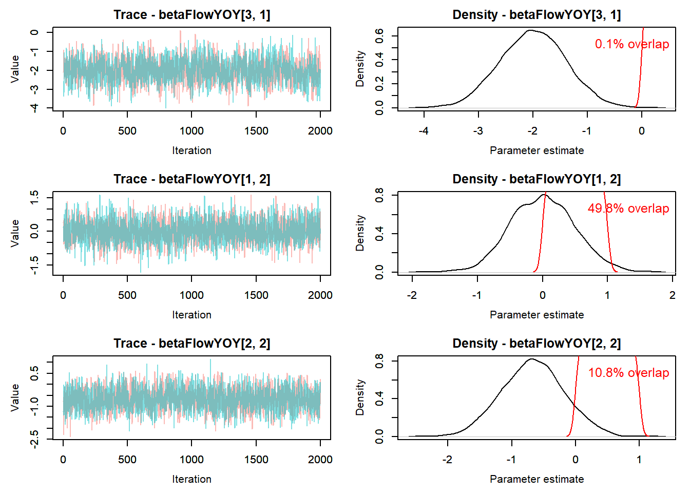
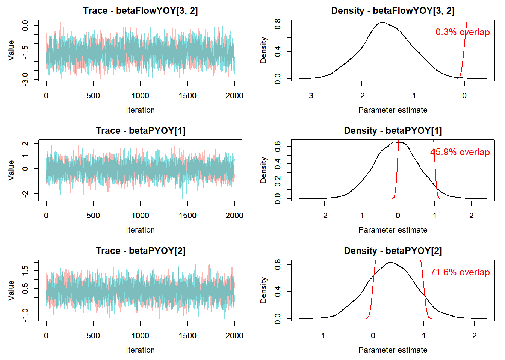
12.0.2 Model phiT_pT flow ByRiver (tt_OB_flowByRiver)
Cohort-dependent estimates of phi and p with flowByRiver and flowByRiver^2 hierarchical effects
12.0.2.1 Retrieve model results
Model is run using targets in R/modelCMR_tt_OB.R
Code
# Following https://oliviergimenez.github.io/bayesian-cr-workshop/worksheets/4_demo.html
#
out_flowByRiver <- tar_read(tt_modelOut_ft_cohort_OB_flowByRiver)
MCMCplot(object = out_flowByRiver$mcmc)
Code
summary_flowByRiver <- MCMCsummary(object = out_flowByRiver$mcmc, round = 3) %>%
mutate(flowData = "flowByRiver") %>%
rownames_to_column(var = "var")
summary_flowByRiver %>% filter(grepl("betaIntYOYSeason", var)) var mean sd 2.5% 50% 97.5% Rhat n.eff
1 betaIntYOYSeason[1, 1] 1.304 0.409 0.539 1.292 2.159 1.01 392
2 betaIntYOYSeason[2, 1] 0.914 0.670 -0.119 0.828 2.637 1.22 153
3 betaIntYOYSeason[1, 2] 1.575 1.156 -0.602 1.548 3.863 1.01 2753
4 betaIntYOYSeason[2, 2] 0.429 0.376 -0.289 0.419 1.185 1.01 438
5 betaIntYOYSeason[1, 3] 1.694 0.816 0.180 1.637 3.372 1.20 69
6 betaIntYOYSeason[2, 3] 0.921 0.404 0.151 0.908 1.741 1.01 450
7 betaIntYOYSeason[1, 4] 2.530 0.563 1.431 2.536 3.630 1.06 266
8 betaIntYOYSeason[2, 4] 0.991 0.533 0.051 0.953 2.147 1.07 284
9 betaIntYOYSeasonOut[1, 1] 0.779 0.067 0.632 0.785 0.896 1.01 416
10 betaIntYOYSeasonOut[2, 1] 0.696 0.117 0.470 0.696 0.933 1.16 207
11 betaIntYOYSeasonOut[1, 2] 0.779 0.172 0.354 0.825 0.979 1.02 2989
12 betaIntYOYSeasonOut[2, 2] 0.602 0.087 0.428 0.603 0.766 1.01 463
13 betaIntYOYSeasonOut[1, 3] 0.818 0.112 0.545 0.837 0.967 1.23 87
14 betaIntYOYSeasonOut[2, 3] 0.708 0.080 0.538 0.713 0.851 1.01 458
15 betaIntYOYSeasonOut[1, 4] 0.917 0.044 0.807 0.927 0.974 1.05 256
16 betaIntYOYSeasonOut[2, 4] 0.717 0.099 0.513 0.722 0.895 1.06 290
flowData
1 flowByRiver
2 flowByRiver
3 flowByRiver
4 flowByRiver
5 flowByRiver
6 flowByRiver
7 flowByRiver
8 flowByRiver
9 flowByRiver
10 flowByRiver
11 flowByRiver
12 flowByRiver
13 flowByRiver
14 flowByRiver
15 flowByRiver
16 flowByRiverCode
summary_flowByRiver %>% filter(grepl("betaPhiYOYSeason", var)) var mean sd 2.5% 50% 97.5% Rhat n.eff
1 betaPhiYOYSeason[1, 1] 0.005 1.690 -3.304 0.021 3.299 1 4000
2 betaPhiYOYSeason[2, 1] -0.015 1.746 -3.448 -0.020 3.398 1 4151
3 betaPhiYOYSeason[1, 2] 0.003 1.689 -3.329 0.004 3.336 1 4000
4 betaPhiYOYSeason[2, 2] 0.015 1.739 -3.476 0.034 3.352 1 4000
5 betaPhiYOYSeason[1, 3] 0.052 1.694 -3.262 0.033 3.398 1 4000
6 betaPhiYOYSeason[2, 3] 0.022 1.750 -3.453 0.017 3.433 1 4000
7 betaPhiYOYSeason[1, 4] 0.003 1.700 -3.201 -0.004 3.314 1 4164
8 betaPhiYOYSeason[2, 4] 0.016 1.756 -3.565 0.020 3.374 1 3842
9 betaPhiYOYSeasonOut[1, 1] 0.502 0.288 0.035 0.505 0.964 1 4000
10 betaPhiYOYSeasonOut[2, 1] 0.498 0.295 0.031 0.495 0.968 1 4161
11 betaPhiYOYSeasonOut[1, 2] 0.501 0.289 0.035 0.501 0.966 1 4000
12 betaPhiYOYSeasonOut[2, 2] 0.504 0.292 0.030 0.509 0.966 1 4000
13 betaPhiYOYSeasonOut[1, 3] 0.508 0.290 0.037 0.508 0.968 1 4000
14 betaPhiYOYSeasonOut[2, 3] 0.504 0.294 0.031 0.504 0.969 1 4000
15 betaPhiYOYSeasonOut[1, 4] 0.499 0.291 0.039 0.499 0.965 1 4000
16 betaPhiYOYSeasonOut[2, 4] 0.504 0.293 0.028 0.505 0.967 1 4000
flowData
1 flowByRiver
2 flowByRiver
3 flowByRiver
4 flowByRiver
5 flowByRiver
6 flowByRiver
7 flowByRiver
8 flowByRiver
9 flowByRiver
10 flowByRiver
11 flowByRiver
12 flowByRiver
13 flowByRiver
14 flowByRiver
15 flowByRiver
16 flowByRiverCode
summary_flowByRiver %>% filter(grepl("betaFlow", var)) var mean sd 2.5% 50% 97.5% Rhat n.eff flowData
1 betaFlow[1, 1, 1] 0.053 0.235 -0.334 0.028 0.581 1.11 214 flowByRiver
2 betaFlow[2, 1, 1] -0.380 0.228 -0.832 -0.375 0.065 1.01 395 flowByRiver
3 betaFlow[3, 1, 1] 0.121 0.159 -0.184 0.118 0.446 1.01 514 flowByRiver
4 betaFlow[1, 2, 1] 0.198 0.493 -0.488 0.111 1.511 1.31 119 flowByRiver
5 betaFlow[2, 2, 1] -0.942 0.358 -1.672 -0.926 -0.274 1.06 304 flowByRiver
6 betaFlow[3, 2, 1] 0.182 0.309 -0.428 0.185 0.770 1.10 282 flowByRiver
7 betaFlow[1, 1, 2] -0.211 1.183 -2.532 -0.192 2.124 1.01 1735 flowByRiver
8 betaFlow[2, 1, 2] 0.613 1.142 -1.634 0.597 2.808 1.00 2024 flowByRiver
9 betaFlow[3, 1, 2] 0.439 1.168 -1.814 0.435 2.715 1.00 3234 flowByRiver
10 betaFlow[1, 2, 2] 0.399 0.215 0.017 0.384 0.869 1.02 189 flowByRiver
11 betaFlow[2, 2, 2] -1.218 0.216 -1.654 -1.210 -0.819 1.03 212 flowByRiver
12 betaFlow[3, 2, 2] -0.266 0.160 -0.595 -0.256 0.026 1.02 294 flowByRiver
13 betaFlow[1, 1, 3] -0.273 0.922 -2.036 -0.340 1.627 1.23 57 flowByRiver
14 betaFlow[2, 1, 3] 0.209 0.726 -1.224 0.213 1.670 1.03 245 flowByRiver
15 betaFlow[3, 1, 3] 1.195 0.830 -0.350 1.171 2.914 1.06 243 flowByRiver
16 betaFlow[1, 2, 3] -0.157 0.272 -0.695 -0.163 0.392 1.00 168 flowByRiver
17 betaFlow[2, 2, 3] -1.059 0.280 -1.637 -1.043 -0.548 1.00 188 flowByRiver
18 betaFlow[3, 2, 3] -0.721 0.251 -1.229 -0.707 -0.250 1.00 146 flowByRiver
19 betaFlow[1, 1, 4] -0.566 0.248 -1.044 -0.562 -0.080 1.01 479 flowByRiver
20 betaFlow[2, 1, 4] 2.678 0.523 1.682 2.669 3.733 1.04 345 flowByRiver
21 betaFlow[3, 1, 4] 0.226 0.371 -0.474 0.224 0.947 1.00 433 flowByRiver
22 betaFlow[1, 2, 4] -0.291 0.226 -0.714 -0.294 0.175 1.08 393 flowByRiver
23 betaFlow[2, 2, 4] 1.436 0.507 0.450 1.440 2.467 1.03 285 flowByRiver
24 betaFlow[3, 2, 4] 0.276 0.307 -0.370 0.290 0.855 1.01 347 flowByRiver
25 betaFlowTop[1] -0.058 0.644 -1.315 -0.048 1.166 1.01 3172 flowByRiver
26 betaFlowTop[2] 0.106 0.635 -1.120 0.103 1.330 1.00 3518 flowByRiver
27 betaFlowTop[3] 0.114 0.628 -1.111 0.098 1.350 1.00 3685 flowByRiver
28 betaFlowYOY[1, 1] -0.213 0.600 -1.402 -0.225 0.965 1.06 374 flowByRiver
29 betaFlowYOY[2, 1] 0.633 0.576 -0.499 0.628 1.780 1.00 1095 flowByRiver
30 betaFlowYOY[3, 1] 0.409 0.577 -0.688 0.410 1.556 1.01 1213 flowByRiver
31 betaFlowYOY[1, 2] 0.013 0.496 -0.938 0.008 0.981 1.01 1296 flowByRiver
32 betaFlowYOY[2, 2] -0.335 0.498 -1.328 -0.335 0.644 1.00 1561 flowByRiver
33 betaFlowYOY[3, 2] -0.085 0.481 -1.030 -0.086 0.856 1.00 2634 flowByRiverCode
priors <- runif(out_flowByRiver$runData$nIter * out_flowByRiver$runData$nChains, 0, 1)
MCMCtrace(object = out_flowByRiver$mcmc,
#ISB = FALSE,
#exact = TRUE,
params = c( "betaIntYOY", "betaPhiYOY","betaFlowYOY","betaPYOY" ),
pdf = FALSE,
priors = priors)


Code
# MCMCtrace(object = out_flowByRiver$mcmc,
# #ISB = FALSE,
# #exact = TRUE,
# params = c("betaInt"),
# pdf = FALSE,
# priors = priors)12.0.2.2 Compare parameter estimates of models with flow and flowByRiver
Code
both <- bind_rows(summary_flow, summary_flowByRiver) %>%
rename(lo = '2.5%', hi = '97.5%')
ggplot(both %>% filter(grepl("betaFlowTop", var)), aes(color = flowData)) +
geom_point(aes(var, mean), size = 2, position = position_dodge(width = 0.5)) +
geom_errorbar( aes(var, ymin = lo, ymax = hi), width = 0.4, position = position_dodge(width = 0.5)) 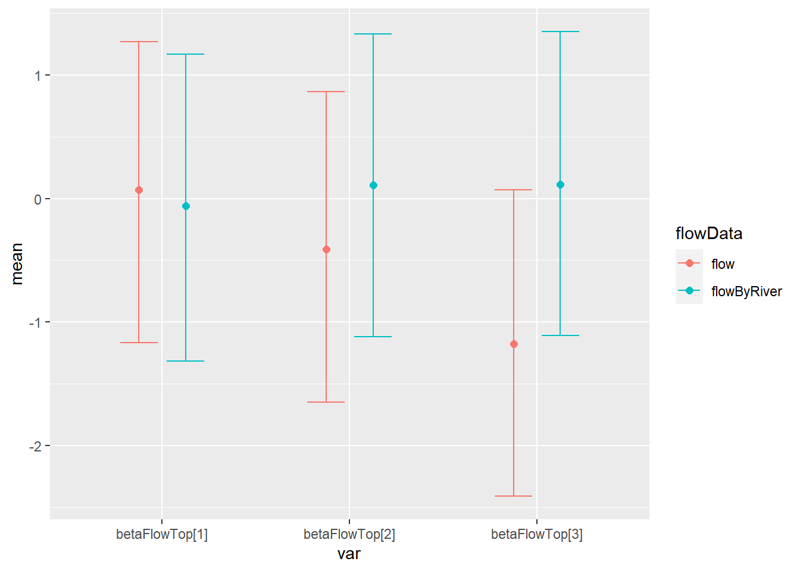
Code
ggplot(both %>% filter(grepl("betaPhiTop", var)), aes(color = flowData)) +
geom_point(aes(var, mean), size = 2, position = position_dodge(width = 0.5)) +
geom_errorbar( aes(var, ymin = lo, ymax = hi), width = 0.4, position = position_dodge(width = 0.5)) +
theme(axis.text.x = element_text(angle = 90, vjust = 1, hjust=1))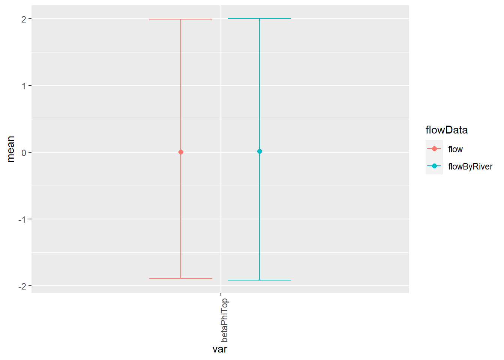
Code
ggplot(both %>% filter(grepl("betaFlowYOY", var)), aes(color = flowData)) +
geom_point(aes(var, mean), size = 2, position = position_dodge(width = 0.5)) +
geom_errorbar( aes(var, ymin = lo, ymax = hi), width = 0.4, position = position_dodge(width = 0.5)) +
theme(axis.text.x = element_text(angle = 90, vjust = 1, hjust=1))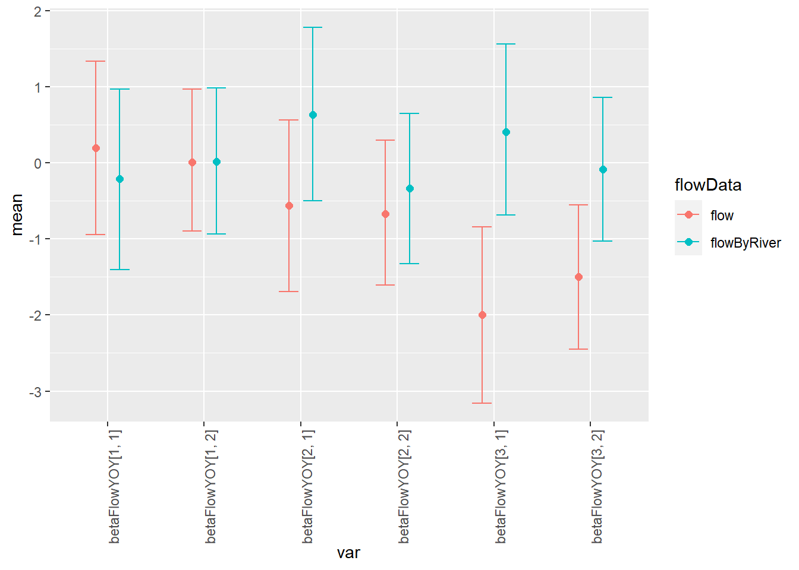
Code
ggplot(both %>% filter(grepl("betaPhiYOY", var)), aes(color = flowData)) +
geom_point(aes(var, mean), size = 2, position = position_dodge(width = 0.5)) +
geom_errorbar( aes(var, ymin = lo, ymax = hi), width = 0.4, position = position_dodge(width = 0.5)) +
theme(axis.text.x = element_text(angle = 90, vjust = 1, hjust=1))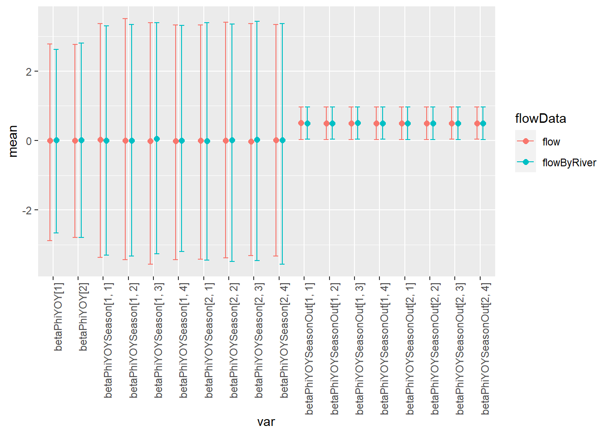
Code
ggplot(both %>% filter(grepl("betaIntYOYSeason", var)), aes(color = flowData)) +
geom_point(aes(var, mean), size = 2, position = position_dodge(width = 0.5)) +
geom_errorbar( aes(var, ymin = lo, ymax = hi), width = 0.4, position = position_dodge(width = 0.5)) +
theme(axis.text.x = element_text(angle = 90, vjust = 1, hjust=1))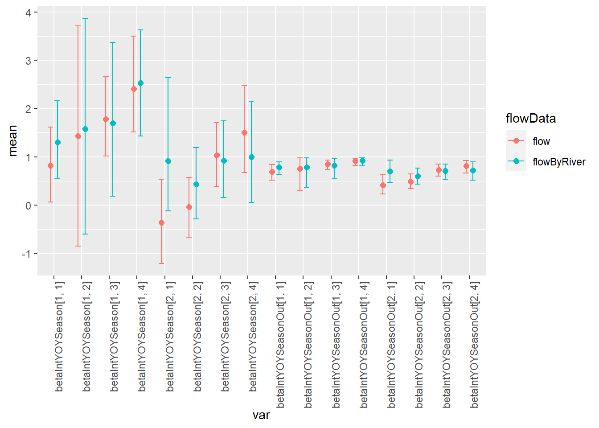
Code
ggplot(both %>% filter(grepl("betaPhiYOYSeason", var)), aes(color = flowData)) +
geom_point(aes(var, mean), size = 2, position = position_dodge(width = 0.5)) +
geom_errorbar( aes(var, ymin = lo, ymax = hi), width = 0.4, position = position_dodge(width = 0.5)) +
theme(axis.text.x = element_text(angle = 90, vjust = 1, hjust=1))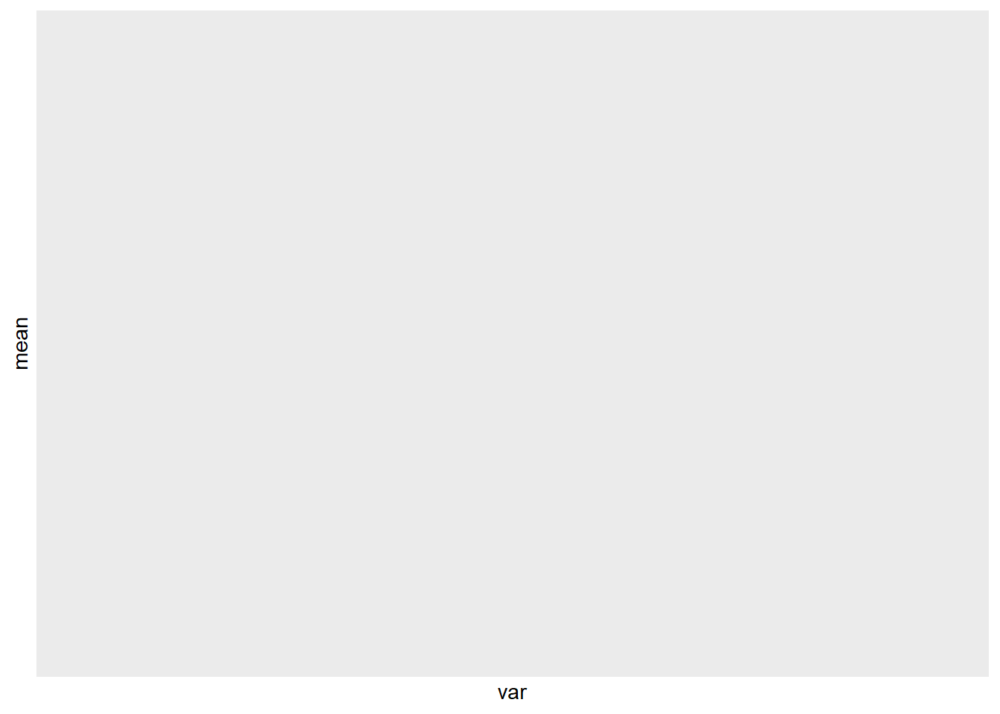
Code
ggplot(both %>% filter(grepl("betaInt", var)), aes(color = flowData)) +
geom_point(aes(var, mean), size = 2, position = position_dodge(width = 0.5)) +
geom_errorbar( aes(var, ymin = lo, ymax = hi), width = 0.4, position = position_dodge(width = 0.5)) +
theme(axis.text.x = element_text(angle = 90, vjust = 1, hjust=1))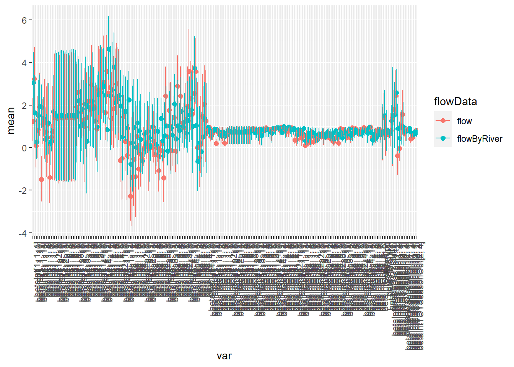
Code
ggplot(both %>% filter(grepl("betaPYOY", var)), aes(color = flowData)) +
geom_point(aes(var, mean), size = 2, position = position_dodge(width = 0.5)) +
geom_errorbar( aes(var, ymin = lo, ymax = hi), width = 0.4, position = position_dodge(width = 0.5)) +
theme(axis.text.x = element_text(angle = 90, vjust = 1, hjust=1))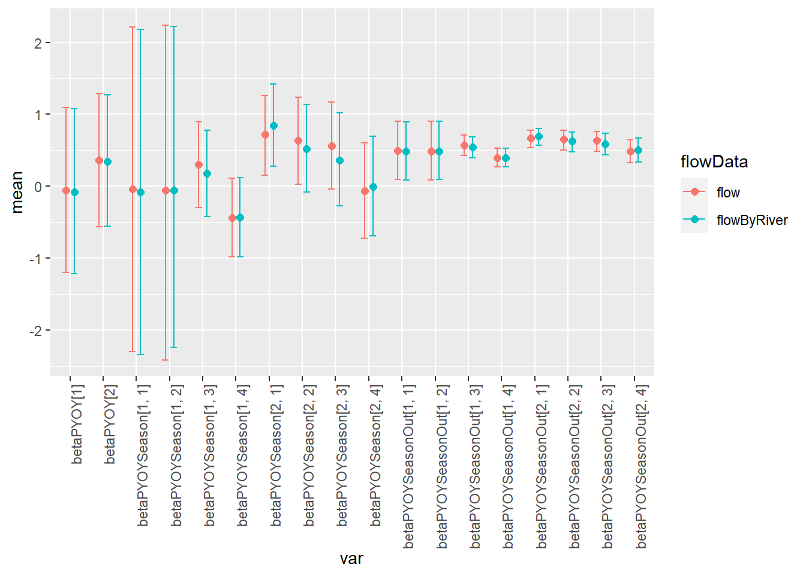
Code
# ggplot(both %>% filter(grepl("betaPOut", var)), aes(color = flowData)) +
# geom_point(aes(var, mean), size = 2, position = position_dodge(width = 0.5)) +
# geom_errorbar( aes(var, ymin = lo, ymax = hi), width = 0.4, position = position_dodge(width = 0.5)) +
# theme(axis.text.x = element_text(angle = 90, vjust = 1, hjust=1))Code
getPredictions_FlowYOYSeasonCohort <- function(toSave, everyNIters = 10, flowStep = 0.5){
mcmc <- toSave$mcmc
## betaInt
predictorsBetaInt <- expand.grid(
iter = seq(1, dim(mcmc$chain1)[1], everyNIters),
isYOY = 1:2,
season = 1:toSave$myConstants$nSeasons,
cohort = 1:toSave$myConstants$nCohorts
)
for(i in 1:nrow(predictorsBetaInt)){
predictorsBetaInt$betaInt[i] <- mcmc$chain1[[predictorsBetaInt[i, "iter"],
paste0("betaInt[", predictorsBetaInt[i, "isYOY"],
", ", predictorsBetaInt[i, "season"],
", ", predictorsBetaInt[i, "cohort"],
"]")
]]
}
# ## betaPhi
# predictorsBetaPhi <- expand.grid(
# iter = seq(1, dim(mcmc$chain1)[1], everyNIters),
# isYOY = 1:2,
# season = 1:toSave$myConstants$nSeasons,
# cohort = 1:toSave$myConstants$nCohorts
# )
#
# for(i in 1:nrow(predictorsBetaPhi)){
# predictorsBetaPhi$betaPhi[i] <- mcmc$chain1[[predictorsBetaPhi[i, "iter"],
# paste0("betaPhi[", predictorsBetaPhi[i, "isYOY"],
# ", ", predictorsBetaPhi[i, "season"],
# ", ", predictorsBetaPhi[i, "cohort"],
# "]")
# ]]
# }
## betaFlow
predictorsBetaFlow <- expand.grid(
iter = seq(1, dim(mcmc$chain1)[1], everyNIters),
isYOY = 1:2,
season = 1:toSave$myConstants$nSeasons
# cohort = 1:toSave$myConstants$nCohorts
)
for(i in 1:nrow(predictorsBetaFlow)){
predictorsBetaFlow$betaFlow1[i] <- mcmc$chain1[[predictorsBetaFlow[i, "iter"],
paste0("betaFlow[1, ", predictorsBetaFlow[i, "isYOY"],
", ", predictorsBetaFlow[i, "season"],
# ", ", predictorsBetaFlow[i, "cohort"],
"]")
]]
predictorsBetaFlow$betaFlow2[i] <- mcmc$chain1[[predictorsBetaFlow[i, "iter"],
paste0("betaFlow[2, ", predictorsBetaFlow[i, "isYOY"],
", ", predictorsBetaFlow[i, "season"],
# ", ", predictorsBetaFlow[i, "cohort"],
"]")
]]
predictorsBetaFlow$betaFlow3[i] <- mcmc$chain1[[predictorsBetaFlow[i, "iter"],
paste0("betaFlow[3, ", predictorsBetaFlow[i, "isYOY"],
", ", predictorsBetaFlow[i, "season"],
# ", ", predictorsBetaFlow[i, "cohort"],
"]")
]]
}
predictorsAll <- expand.grid(
iter = seq(1, dim(mcmc$chain1)[1], everyNIters),
isYOY = 1:2,
cohort = 1:toSave$myConstants$nCohorts,
season = 1:toSave$myConstants$nSeasons,
flow = seq(-1.5, 1.5, flowStep),
temp = seq(-1.5, 1.5, flowStep)
)
preds <- predictorsAll %>%
left_join(predictorsBetaInt) %>%
left_join(predictorsBetaFlow) %>%
# left_join(predictorsBetaPhi) %>%
mutate(predPhi = plogis(betaInt + betaFlow1 * flow + betaFlow2 * temp + betaFlow3 * flow * temp))
return(preds)
}Code
getPredictions_FlowYOYSeason <- function(toSave, everyNIters = 10, flowStep = 0.5){
mcmc <- toSave$mcmc
## betaInt
predictorsBetaInt <- expand.grid(
iter = seq(1, dim(mcmc$chain1)[1], everyNIters),
isYOY = 1:2,
season = 1:toSave$myConstants$nSeasons
# cohort = 1:toSave$myConstants$nCohorts
)
for(i in 1:nrow(predictorsBetaInt)){
predictorsBetaInt$betaInt[i] <- mcmc$chain1[[predictorsBetaInt[i, "iter"],
paste0("betaIntYOYSeason[", predictorsBetaInt[i, "isYOY"],
", ", predictorsBetaInt[i, "season"],
# ", ", predictorsBetaInt[i, "cohort"],
"]")
]]
}
# ## betaPhi
# predictorsBetaPhi <- expand.grid(
# iter = seq(1, dim(mcmc$chain1)[1], everyNIters),
# isYOY = 1:2,
# season = 1:toSave$myConstants$nSeasons
# # cohort = 1:toSave$myConstants$nCohorts
# )
#
# for(i in 1:nrow(predictorsBetaPhi)){
# predictorsBetaPhi$betaPhi[i] <- mcmc$chain1[[predictorsBetaPhi[i, "iter"],
# paste0("betaPhiYOYSeason[", predictorsBetaPhi[i, "isYOY"],
# ", ", predictorsBetaPhi[i, "season"],
# # ", ", predictorsBetaPhi[i, "cohort"],
# "]")
# ]]
# }
## betaFlow
predictorsBetaFlow <- expand.grid(
iter = seq(1, dim(mcmc$chain1)[1], everyNIters),
isYOY = 1:2,
season = 1:toSave$myConstants$nSeasons
# cohort = 1:toSave$myConstants$nCohorts
)
for(i in 1:nrow(predictorsBetaFlow)){
predictorsBetaFlow$betaFlow1[i] <- mcmc$chain1[[predictorsBetaFlow[i, "iter"],
paste0("betaFlow[1, ", predictorsBetaFlow[i, "isYOY"],
", ", predictorsBetaFlow[i, "season"],
# ", ", predictorsBetaFlow[i, "cohort"],
"]")
]]
predictorsBetaFlow$betaFlow2[i] <- mcmc$chain1[[predictorsBetaFlow[i, "iter"],
paste0("betaFlow[2, ", predictorsBetaFlow[i, "isYOY"],
", ", predictorsBetaFlow[i, "season"],
# ", ", predictorsBetaFlow[i, "cohort"],
"]")
]]
predictorsBetaFlow$betaFlow3[i] <- mcmc$chain1[[predictorsBetaFlow[i, "iter"],
paste0("betaFlow[3, ", predictorsBetaFlow[i, "isYOY"],
", ", predictorsBetaFlow[i, "season"],
# ", ", predictorsBetaFlow[i, "cohort"],
"]")
]]
}
predictorsAll <- expand.grid(
iter = seq(1, dim(mcmc$chain1)[1], everyNIters),
isYOY = 1:2,
# cohort = 1:toSave$myConstants$nCohorts,
season = 1:toSave$myConstants$nSeasons,
flow = seq(-1.5, 1.5, flowStep),
temp = seq(-1.5, 1.5, flowStep)
)
preds <- predictorsAll %>%
left_join(predictorsBetaInt) %>%
left_join(predictorsBetaFlow) %>%
# left_join(predictorsBetaPhi) %>%
mutate(predPhi = plogis(betaInt + betaFlow1 * flow + betaFlow2 * temp + betaFlow3 * flow * temp))
return(preds)
}12.0.3 Flow_YOYSeason predictions
Code
predFlowYOYSeason <- getPredictions_FlowYOYSeason(out_flow, everyNIters = 5) %>%
mutate(flowData = "flow")
predFlowByRiverYOYSeason <- getPredictions_FlowYOYSeason(out_flowByRiver, everyNIters = 5) %>%
mutate(flowData = "flowByRiver")
predBoth <- bind_rows(predFlowYOYSeason, predFlowByRiverYOYSeason)12.0.3.1 Graph flow predictions
Predictions based on flow from the flow extension curve - original approach
Code
colors <- c("blue", "green", "red")
ggplot(predFlowYOYSeason %>% filter(temp %in% c(-1,0,1)), aes(flow, predPhi, group = ((paste0(iter,temp, sep = "_"))))) +
geom_line(aes(color = factor(temp)), alpha = 0.05) +
scale_color_manual(values = colors) +
facet_grid(season ~ isYOY)
Predictions based on flow from flowByRiver
Code
ggplot(predFlowByRiverYOYSeason %>% filter(temp %in% c(-1,0,1)), aes(flow, predPhi, group = ((paste0(iter,temp, sep = "_"))))) +
geom_line(aes(color = factor(temp)), alpha = 0.05) +
scale_color_manual(values = colors) +
facet_grid(season ~ isYOY)
Similar format to to the 2015 paper
Code
ggplot(predFlowYOYSeason %>% filter(flow %in% c(-1,0,1)), aes(temp, predPhi, group = ((paste0(iter,flow, sep = "_"))))) +
geom_line(aes(color = factor(flow)), alpha = 0.05) +
scale_color_manual(values = colors) +
facet_grid(season ~ isYOY)
12.0.4 Flow_YOYSeasonCohort predictions
Code
predFlowYOYSeasonCohort <- getPredictions_FlowYOYSeasonCohort(out_flow, everyNIters = 5) %>%
mutate(flowData = "flow")
predFlowByRiverYOYSeasonCohort <- getPredictions_FlowYOYSeasonCohort(out_flowByRiver, everyNIters = 5) %>%
mutate(flowData = "flowByRiver")
predBoth <- bind_rows(predFlowYOYSeasonCohort, predFlowByRiverYOYSeasonCohort)12.0.4.1 Graph flow predictions
Predictions based on flow from the flow extension curve - original approach
Code
colors <- c("blue", "green", "red")
ggplot(predFlowYOYSeasonCohort %>% filter(temp %in% c(-1,0,1)), aes(flow, predPhi, group = ((paste0(iter,temp,cohort, sep = "_"))))) +
geom_line(aes(color = factor(temp)), alpha = 0.05) +
scale_color_manual(values = colors) +
facet_grid(season ~ isYOY + cohort)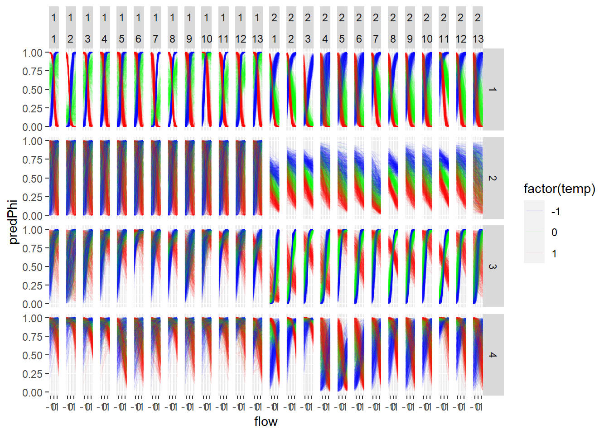
Predictions based on flow from flowByRiver
Code
ggplot(predFlowByRiverYOYSeasonCohort %>% filter(temp %in% c(-1,0,1)), aes(flow, predPhi, group = ((paste0(iter,temp,cohort, sep = "_"))))) +
geom_line(aes(color = factor(temp)), alpha = 0.05) +
scale_color_manual(values = colors) +
facet_grid(season ~ isYOY + cohort)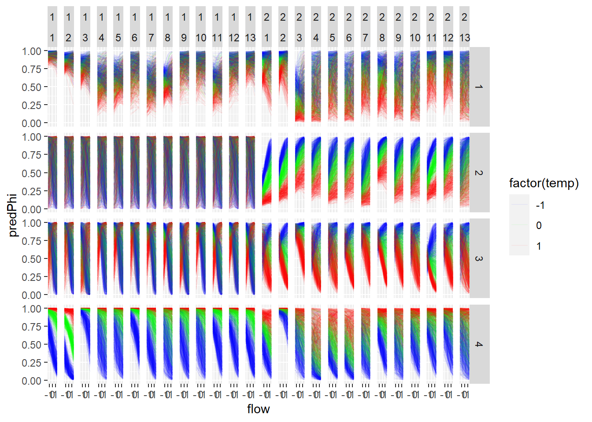
Similar format to to the 2015 paper
Code
ggplot(predFlowYOYSeasonCohort %>% filter(flow %in% c(-1,0,1)), aes(temp, predPhi, group = ((paste0(iter,flow,cohort, sep = "_"))))) +
geom_line(aes(color = factor(flow)), alpha = 0.05) +
scale_color_manual(values = colors) +
facet_grid(season ~ isYOY)
12.0.4.2 FlowTop predictions
Code
# predFlowTop <- getPredictionsFlowTop(out_flow, everyNIters = 5) %>%
# mutate(flowData = "flow")
#
# predFlowByRiverTop <- getPredictionsFlowTop(out_flowByRiver, everyNIters = 5) %>%
# mutate(flowData = "flowByRiver")
#
# predTopBoth <- bind_rows(predFlowTop, predFlowByRiverTop)Code
# ggplot(predTopBoth, aes(flow, predPhi, group = iter)) +
# geom_line() +
# facet_wrap(~flowData)
#
# ggplot(predTopBoth %>% filter(iter < 100), aes(flow, predPhi, group = iter)) +
# geom_line() +
# facet_grid(flowData ~ iter)Code
getPredictionsFlowTop <- function(toSave, everyNIters = 10, flowStep = 0.5){
mcmc <- toSave$mcmc
## betaFlow
predictorsBetaFlowTop <- expand.grid(
iter = seq(1, dim(mcmc$chain1)[1], everyNIters),
var = 1:2,
flow = seq(-1.5, 1.5, flowStep),
temp = seq(-1.5, 1.5, flowStep)
)
for(i in 1:nrow(predictorsBetaFlowTop)){
predictorsBetaFlowTop$betaFlowTop1[i] <- mcmc$chain1[[predictorsBetaFlowTop[i, "iter"],
1
]]
predictorsBetaFlowTop$betaFlowTop2[i] <- mcmc$chain1[[predictorsBetaFlowTop[i, "iter"],
2
]]
predictorsBetaFlowTop$betaFlowTop3[i] <- mcmc$chain1[[predictorsBetaFlowTop[i, "iter"],
3
]]
}
preds <- predictorsBetaFlowTop %>%
mutate(predPhi = plogis(betaFlow1 * flow + betaFlow2 * temp + betaFlow3 * flow * temp))
return(preds)
}